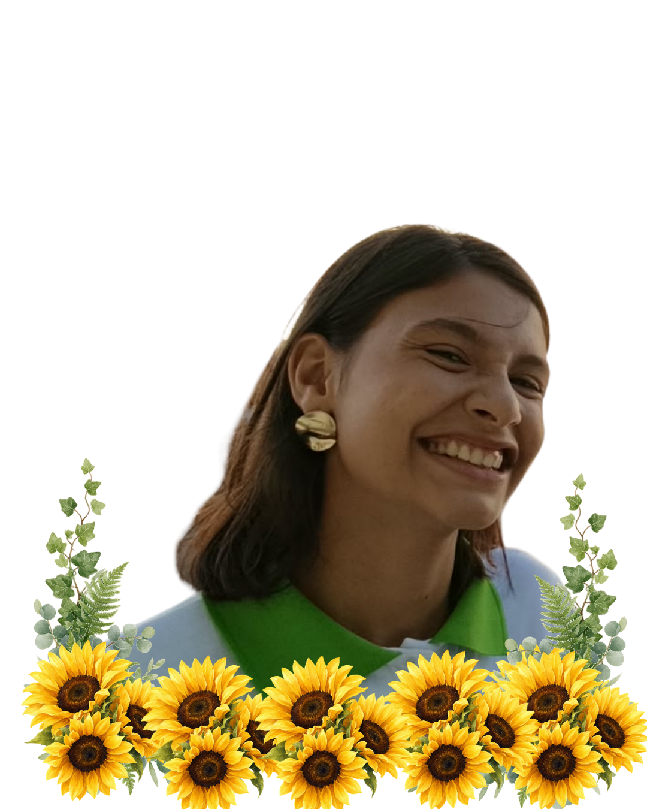

Meu nome é Maria Eduarda da Silva Barbalho, alguns me chamam apenas de "Barbalho".
Possuo atualmente 16 anos, faço aniversário dia 29/12, moro em Serrinha (RN).
Gosto bastante de música, dança, handbool, RPG.
Acredito que oque me representa é a cor roxa, pois simboliza espiritualidade, transformação, luxo e mistério.
Aplicativos que mais acesso diariamente:
-
Instagram
Gosto de usar o Instagram para ver fotos e vídeos, acompanhar meus amigos, conhecer novidades e compartilhar momentos do meu dia a dia.
Clique aqui: -
Youtube
Uso o YouTube para assistir a vídeos, ouvir minhas músicas favoritas, acompanhar conteúdos sobre assuntos de que gosto e me divertir no tempo livre.
Clique aqui: -
Whatsapp
Utilizo o WhatsApp para conversar com meus amigos e familiares, compartilhar fotos, vídeos e mensagens, além de manter contato com as pessoas.
Clique aqui:
| Coisas que eu gosto: Musica, anime e RPG. | |
| Música: | Adoro escutar músicas enquanto tomo banho. |
| Anime: | As histórias,músicas e principalmente as lutas. |
| RPG: | Jogar RPG é a coisa mais legal para se fazer no tempo livre. |